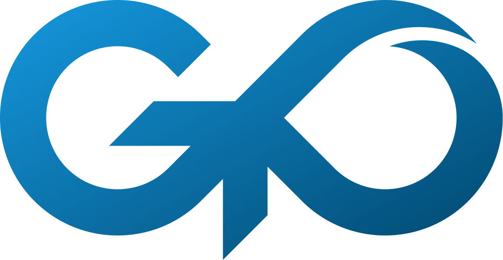

Design System · V1
Tokens, tipografia e componentes extraídos do site V1 da Seven Go (src/). Fonte única: Montserrat. Base escura #07090C, accent azul do símbolo GO.
Fundos escuros com seções claras intercaladas. O azul é o único accent: linhas ativas, foco, ícones abertos e o gradiente dos CTAs.
Marca
Fundos & superfícies
Texto & linhas
Montserrat 300–700. Títulos em 500 com tracking negativo; labels em 700 caixa-alta com 0.18em; corpo em 15px / 1.6.
Bigword · --fs-bigword · 400MÉTODOOdômetro · 120–180px · 30007Acordeão · 38–80px · 400Tráfego pagoDisplay · 40–72px · 500Diagnóstico gratuitoH2 · 34–54px · 500O problema não é o anúncioH3 · 20–28px · 500Investimento sem rastreioCTA strip · 20–24px · 500Vamos construir o seu sistema?Body · 15px · 400Aquisição, criativos, páginas e acompanhamento como um único sistema.Small · 13px · 400Parágrafo lateral do layout título + aside.Desc · 12px · 400Descrição de itens de lista e acordeão.Label · 10px · 700 · 0.18emNossos serviçosBotões pílula com círculo e seta ↗ que gira 45° no hover, cards com raio 24px, campos sublinhados e listas com linha azul que corre no hover.
Botões
Tags
Card + formulário
Card claro
Raio 24px, borda --line-light, sombra suave.
Acordeão
Campanhas estruturadas para gerar oportunidade de venda, não só cliques.
Peças pensadas para cada etapa do funil.
Landing pages rápidas e mensuráveis.
Número + título + descrição alinhada à coluna --aside. Linha azul cresce da esquerda; título desliza 8px.
Verba investida sem objetivo claro de negócio.
Tráfego chega, mas não vira contato.
Sem dados, sem decisão.
Faixa de CTA em seção clara.
ComeçarEasing único cubic-bezier(0.22, 1, 0.36, 1). Reveal: fade + 24px + blur 6px→0 em 0.8s, stagger 0.08s. Respeita prefers-reduced-motion.
Passe o mouse · ease-out
Seven Go · Design System V1
